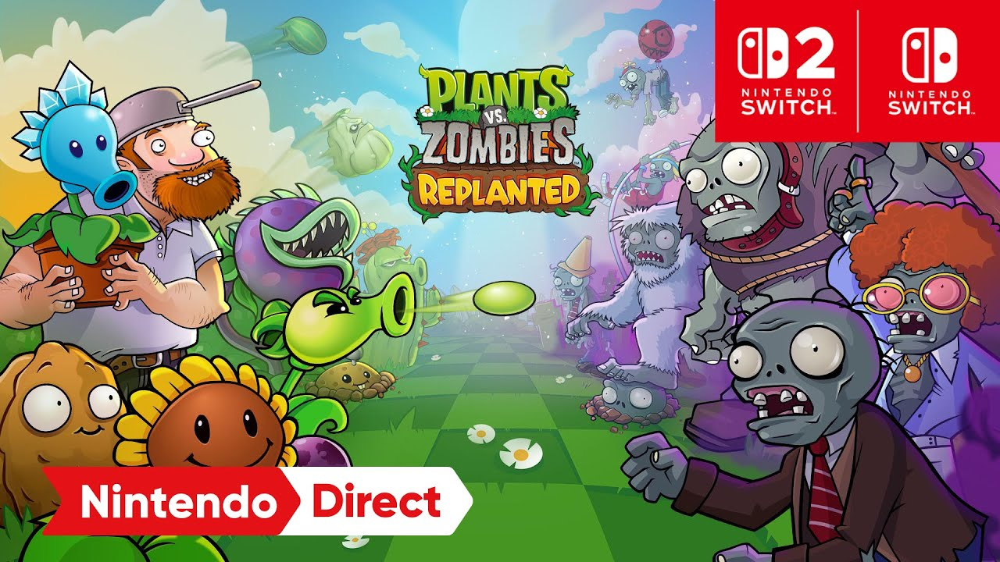
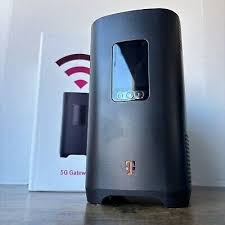

right now as of writting im currently backing up my whole site onto a micro SD becuase my old debit card is dead and im waiting for a new one to come in I migh lose my domain so im just backing everything up just in case soon I should be getting ready to move my site and actually work on it more and ill be learning other stuff too but right now though Im still working through other things in my life no more complaing though im over all of it and im not going to let it spill out on pepole or waste my time

I woke up at 7 and that was really great and I feel good too work was causing me a suprising amount of stress and I really feel the difference now I feel a lot better then I did before and it's such a relief to wake up and not dread going into work immediately would have been the perfect day if I hadant logged on to reddit somone I talk to there deleted their account and thats always the worst feeling when you dont know why Ive learned not to worry when pepole do it because usally it's just because they got bored with whatever they were doing I still worry though because I know them enough to know that they could be going thro a really rough time right now and that could have been why they deleted their account I just have my fingers crossed that Ill mabey talk with them again someday I really wish I spent more time talking with them they were a really cool person another thing I wanted to talk about is plants vs zombies replanted PVZ fans are dooming this game so fucking hard im super excited for it and I already pre-ordered it and all ive seen from my fellow fans so far is just constant complaints and criticisms for a game that hasent even released yet it litearly releases three days before my birthday like please let me have this!!!!!!!!!

I worked for hours trying to figure out a terraria server on my raspberry pi and when I Was finaly done and I had done everything right I figured out my router was a piece of shit that cant port forward it's a terrible router and If I wanted to port forward I would need to buy a bussiness line which is so fucking stupid the crazy thing is I should have seen this coming they have been blocking my Xbox 360 for ages and I should have know that they were being "econmical" with their service im honestly so tired and Im just so done with this I dont have a job anymore im going into collage next year this is just something I cant fincally afford to fix and it's honestly so dejecting that I cant do anything now I was so excited and I was ready to learn how to program the back end of my website but now thats all going to have to be on hold until I can afford to do it for now im still going to update my site here and im going to learn C++ so I can games and stuff so hopefully I have something to show by the time Im ready again I just probably wont be messing with nano or the linux terminal anytime soon
I like the internet becuase I have the choice to express myself free of judgment from others it's exactly why my picture here on my website is me in a skirt that is how I like to be seen I like to be seen in a feminine way in my day to day life though I dont have the confidence or time to really do that publicly and trust me I want to I like the internet becuase of that but it also makes me kinda bummed out making friends here is actually harder then it is IRL and too many times I look on somones profile on reddit and I DM looking for a friend to mabey play vidoe games with or just talk to olny to get no response or end up acidentitally finding somone who is basiclly just posting porn and I mean like lots of it like I Dont think your here to make friends if your running an olny fans that really sucks it's a thing I hate I cant separate the sexual aspect of my hobby becuase of the way other pepole treat it and that wraps back around to me not having the confidence to dress that way in public to many times ive seen consrvitives say that cross dressing is inherently sexual and that it should never be done around children older people share those views too I am not trans I just want to look like a girl but aprently it's more acceptable to publicly be a trans person then it is to be a femboy for some pepole I wear the same outfit every day and ive been doing it for almost 2 years now I want to look the same way everyday I dont want anything to change along with that and this whole preception about cross dressing they combine and I become too afraid to do it outside my room and I really hope that dosent sound like im really bummed out because im not I can keep doing this it's fine it's just unfair and I dont see pepole talking about it in this way.